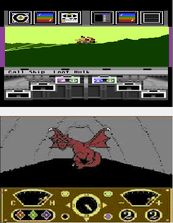
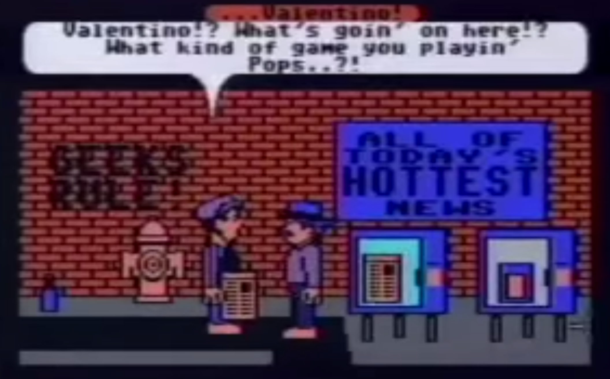
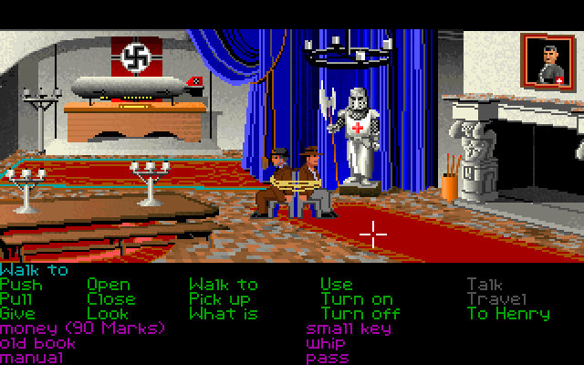
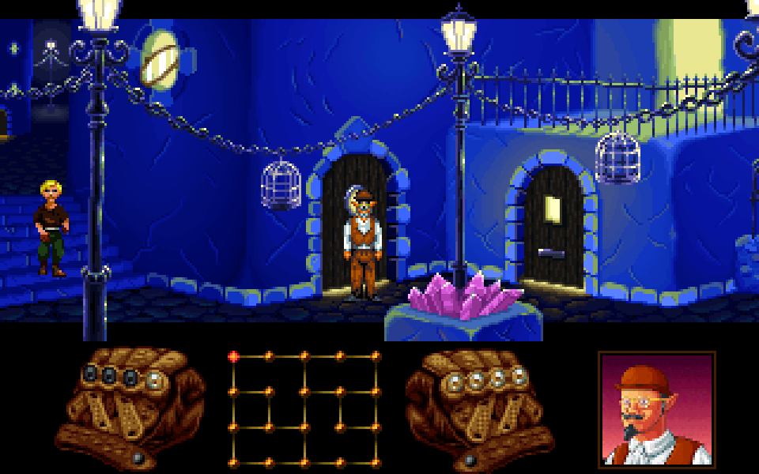
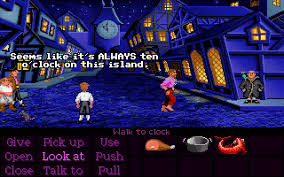
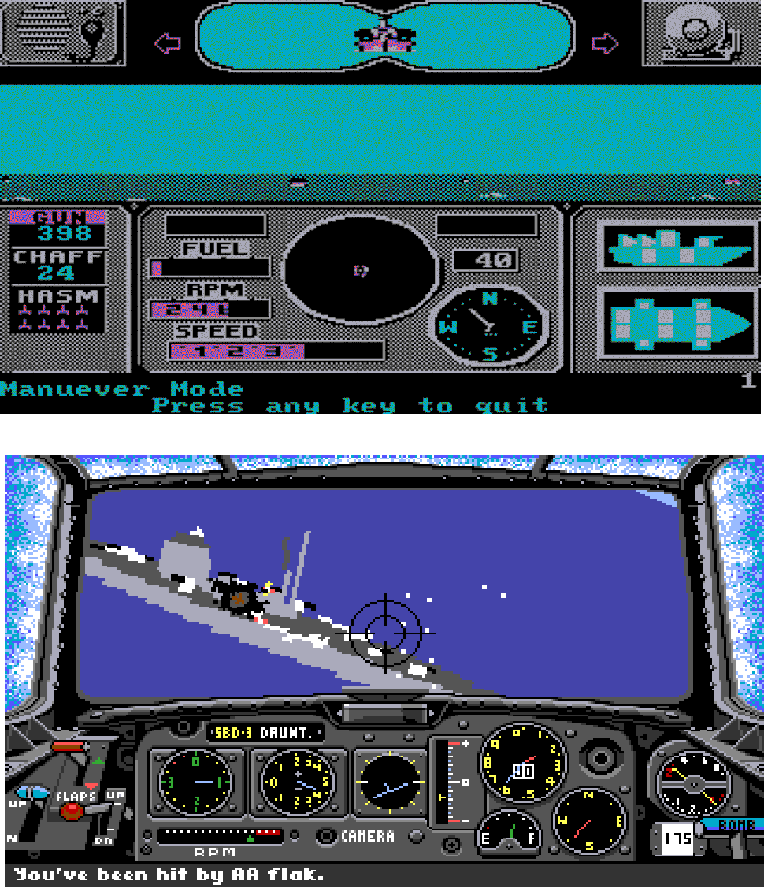

The story of the video game company
LucasArts' logo
LucasArts Entertainment Company, LLC Is an American video game publisher, video game developer and licensor.
After the foundation of Lucasfilm1(an important cinematographic company), George Lucas2, wanted his company to be branched into different areas of entertainmen. So, in 1982 Lucasfilm Games was founded.
During his first decade, Lucasfilm Games Group cooperated with Atari in order to produce two games that had bad luck. They were published by hackers before their official publication (Ballblazer and Rescue on Fractalus!). The company so decided to develop games alone and let to publishers the distribution.
Lucasfilm Games had as a purpose the one of making innovative, technologically advanced video games using experimental means.
In 1990, the entire Games Division was called LucasArts Entertainment. It was formed by Lucasfilm Games Group, Industrial Light & Magic3 and Skywalker Sound4.
The most famous games
Being George Lucas also a famous film director, game from LucasArts were sometimes based on the Lucasfilm's movie. Indiana Jones andStar Wars are well-known. By 1991, LucasArts’games can be divided into three sections: the games based and influenced by the Arcade era, the adventure games and the simulation ones.
The most important games from the first section are Koronis Rift, The Eidolonand and Habitat.
From the adventure games, there are: Indiana Jones and the Last Crusade: The Graphic Adventure and Loom.
As simulation games there are: PHM Pegasus and Battlehawks 1942.
Koronis Rift and The Eidolonand
They were released in 1985, these games are part of the Lucasfilm Game’s second wave. They both took advantages of the collaboration with Atari using the fractal technology, already used in Rescue on Fractalus! 5. Koronis Rift is set on an alien planet and the player has to control a surface rover vehicle in along several rifts defeating different enemies. The Eidolon uses the so called inverted fractals: if in Koronis Rift they were used in order to build mountains, in this game were used to build the inside part of caves and mines; the gameplay is very similar, what changes is the plot.
Habitat
It was released in beta in 1986, it is an early and technologically influential online role-playing game. It is regarded as a forerunner of the modern Massively multiplayer online role-playing game6 . The player used a home computer, usually a Commodore 64, that through modem and telephone communication sent data to a centralise host system. Every other player that was connected to that host system was able to be kept “informed” on every changing state of the game. Every player was able to see, speak and interact with everyone.
Indiana Jones and the Last Crusade: The Graphic Adventure
It was released in 1989 to coincide with the release of the homonymous film, it is a graphic adventure game. This game was one of which helped Lucasfilm Games build a reputation as one of the leading developers in the genre of adventure games. This game used the SCUMM7 engine.
It was so innovative also because it allowed the game to be completed in several different ways, depending on the different choices of the player.
Loom
It was released in 1990, it is a graphical adventure game. This game also uses SCUMM adventure game engine and it is based on a serious and complex fantasy story. It is possible to solve puzzles, interact with game characters, with the environment and with various items that the character can take.
The protagonist can collect different drafts in order to learn spells.
It was the first video game to follow the so called LucasArts Game Design Philosophy in which the protagonist cannot be killed or forced to restart the game.
The Secret of Monkey Island
It was released in 1990, it is a 2D, point-and-click graphic adventure game with a third-person perspective. The story takes place in a fantastic version of the Caribbean during the period of pirates.
The main character is a young man, Guybrush Threepwood, that dreaming of becoming a pirate, starts to explore the island solving puzzles.
This game was also developed using the SCUMM engine and adopting the LucasArts’ Game Design Philosophy, in order to focus more on exploration rather than adventure.
This game’s interaction also works with the use of the dialog tree: this way changes may happen, depending on the choices made by the player.
PHM Pegasus and Battlehawks 1942
They were released in 1986 and 1988, this two titles are ship simulations and action games. The second is the unofficial sequel of the first and they were both developed by LucasArts and published by Electronic Arts.
They are both inspired by real facts: the convoys used by U.S. Army during 70’s and events of World War II. In PHM Pegasus there is also the possibility to control three different types of vehicles.
External Links
- LucasFilm
- George Lucas
- Industrial Light & Magic
- Skywalker Sound
- Rescue on Fractalus!(Videogame)
- Massively multiplayer online role-playing game
- SCUMM
- [Visited on 05/11/14]LucasArts' Logo
- [Visited on 05/11/14]LucasArts' previous Logo
- All the images are Non-free game screenshots used on fair-use